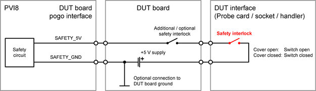

PVI8 safety pogo pins
The card provides the two pogo pins SAFETY_5V and SAFETY_GND to control the on-board safety circuit. Some electrical design rules must be respected for the two pins and the related hardware of the DUT board.
SAFETY_5V
This pin is the high input of the on-board safety circuit. The pin must be connected to an adequate +5.0 V supply via a safety interlock on the DUT board or the DUT interface (Probe card, socket or handler). The return path is the SAFETY_GND pin.
SAFETY_GND
This pin is the return pin for the SAFETY_5V pin. The two pins and the input circuit are isolated from the rest of the card. Parallel connection to the safety circuit of other PVI8 cards or similar circuits of other card types is supported.
Typical values, recommended operating conditions and maximum ratings
Pin |
Parameter |
Value and unit |
|---|---|---|
SAFETY_5V |
Recommended input voltage with closed safety interlock |
5.0 V |
Typical input current @ 5.0 V |
12 mA |
|
Maximum input current @ 7.0 V |
20 mA |
|
Typical capacitive load |
100 nF |
|
Minimum input voltage with closed safety interlock |
4.5 V |
|
Maximum input voltage with open safety interlock |
0.5 V |
Pin |
Parameter |
Value and unit |
|---|---|---|
SAFETY_5V |
Maximum voltage relative to SAFETY_GND |
7.0 V |
Minimum voltage relative to SAFETY_GND |
-0.5 V |
|
SAFETY_GND |
Maximum voltage relative to common DUT board GND |
see note below |
Minimum voltage relative to common DUT board GND |
see note below |
Recommended circuitry
The diagram below shows the recommended circuitry for the safety pogo pins:

Recommended control supply
An adequate +5.0 V supply must be connected to the safety pogo pins via a safety interlock on the DUT board or the DUT interface. An adequate supply is each supply that can deliver the "Minimum input voltage with closed safety interlock" of 4.5 V at a current of about 12.0 mA per PVI8 card. Refer to table "Typical values and recommended operating conditions" above for more information.
We recommend using the Internal utility power supply (V93000 systems) or the External utility power supply (V93000 systems).
- Internal utility power supply (V93000 systems)
The internal supply is enabled as soon as the test head is switched on and a DUT board is connected. The supply delivers about 4.85 V at maximum 3.2 A. The supply pins are to be connected to the PVI8 card as follows:
Pin
Description
Connection
UP5V
+5 V power supply line
Connect to pogo pin SAFETY_5V via a safety interlock on the DUT board or DUT interface.
UGND
Utility ground and return of the internal utility power supply
Connect to pogo pin SAFETY_GND.
- External utility power supply (V93000 systems)
The optional external supply must be switched on or off by Test Method API UTILITY_POWER_STATUS of SmarTest 7. The external utility power supply requires that the large or DUT Scale interface is used and 4-row utility pogo blocks are installed. The supply delivers about 5.0 V at maximum 8 A. The supply pins are to be connected to the PVI8 card as follows:
Pin
Description
Connection
XPP5V
+5V external utility power.
Connect to pogo pin SAFETY_5V via a safety interlock on the DUT board or DUT interface.
XPP5Vs
+5V external utility power sense.
Connect to XPP5V on the DUT board.
Use only one XPP5Vs sense line for power sensing. Leave the XPP5Vs lines on the other utility blocks floating.
UGND
Utility ground and return of the external utility power supply
Connect to pogo pin SAFETY_GND.
UGNDs
Utility ground sense.
Connect to UGND on the DUT board.
Use only one UGNDs sense line for ground sensing. Leave the UGNDs lines on the other utility blocks floating.
Refer to Pogo pin assignment - Utility pogo blocks for the pogo pin assignment of the utility power supplies. Note that the optional external supply is available only for large or DUT Scale interface and on 4-row utility pogo blocks.
Functional changes
- Introduced in SmarTest 7.3.1